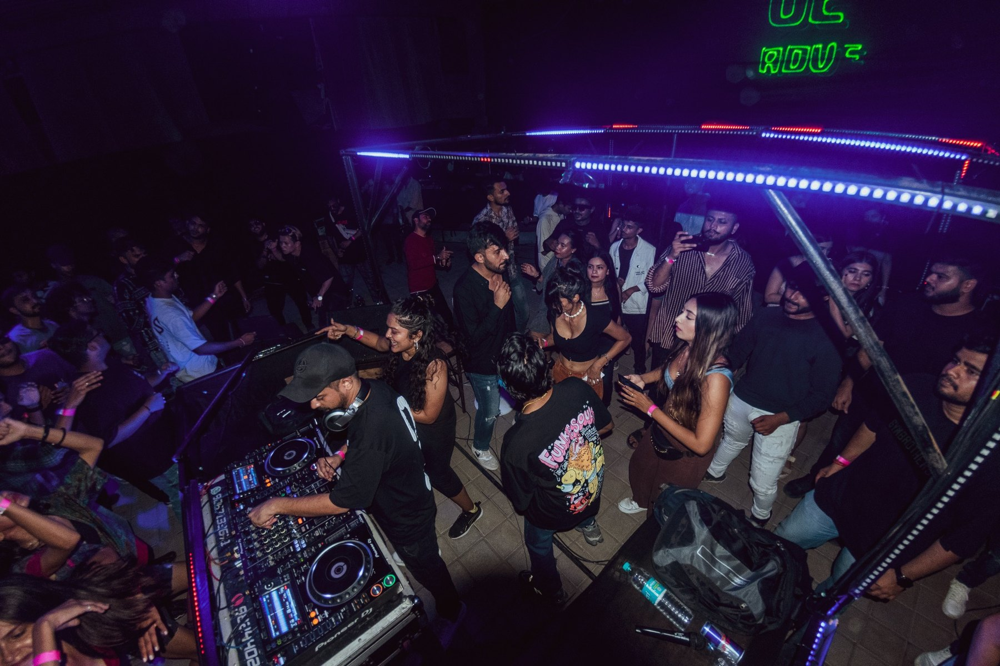
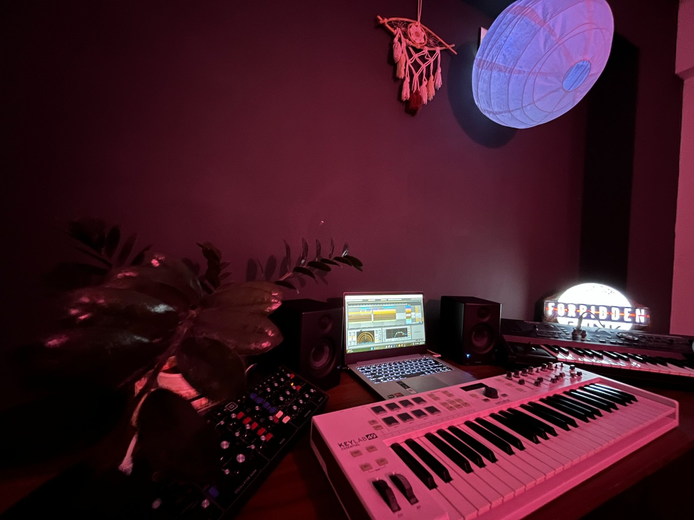
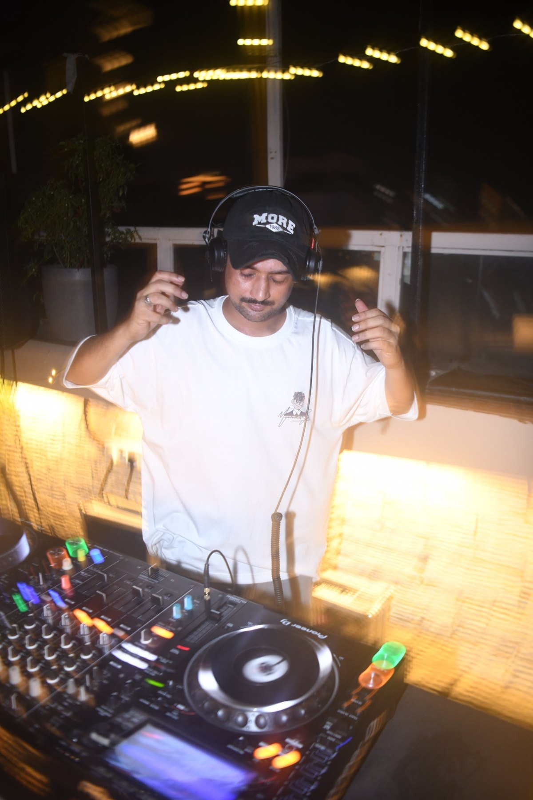
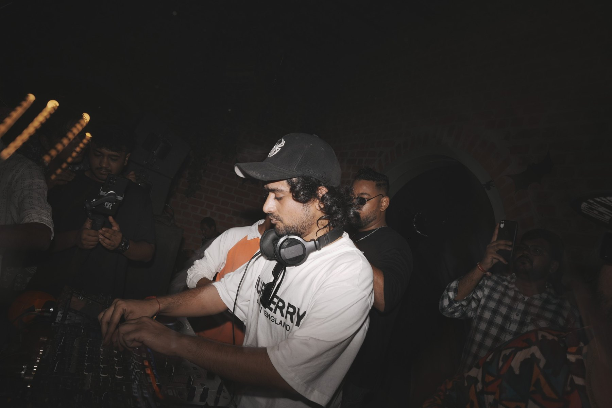

Music for
the in-between.
Cinematic atmosphere. Intricate drums.
Rhythm built for the room.

Somewhere between the pulse of a club and the feeling of a film scene.
LISTEN ON SPOTIFY ↗Out there.
In here.
From late-night rooms to the quiet hours spent building a sound.




Atmosphere for the mind.
Rhythm for the room.
SYNTHATTIC is the musical alter ego of Ashutosh Purohit — an independent producer and DJ drawn to the space between emotional detail and physical energy.
His sound moves through cinematic soundscapes, warm nostalgic textures, intricate drums, Afro-inspired club rhythms and introspective, dub-leaning moods. Open-ended by nature, the music is made to hold two things at once: inward feeling and outward movement.
D.I.Y, a deeply personal project dedicated to Snoop, his late Persian cat and studio companion, reflects the persistence behind the music — rebuilding, experimenting, and making it on his own terms.
STEP INTO THE MUSIC ↗Shared rooms.
Shared energy.
Selected artists and collaborators from the supplied press materials.
Let’s make
something move.
For bookings, press, festivals, support slots and collaborations.